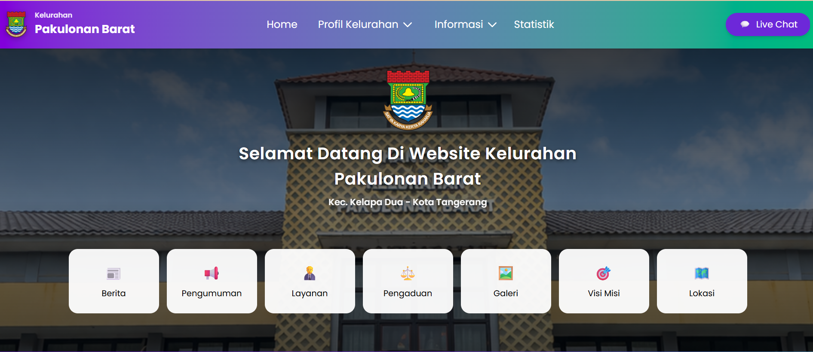
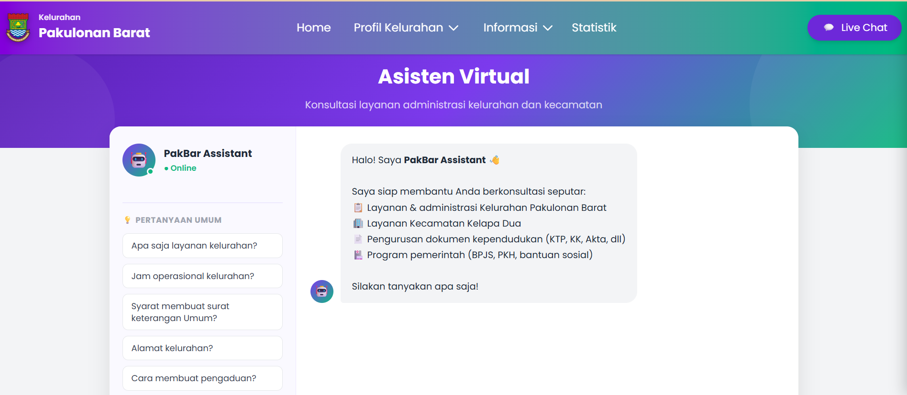

Beranda kelurahanberandakelurahan.png

Chatbot AIchatai.png

Website Kelurahan Pakulonan Barat dengan AI
Website informasi kelurahan dengan chatbot "PakBar Assistant" yang menjawab pertanyaan warga seputar layanan pemerintahan, supaya warga tidak perlu datang hanya untuk bertanya.
- Halaman publik: berita, pengumuman, layanan, dan pengaduan
- Panel admin untuk mengelola konten
- Chatbot berbasis NLP untuk tanya jawab layanan